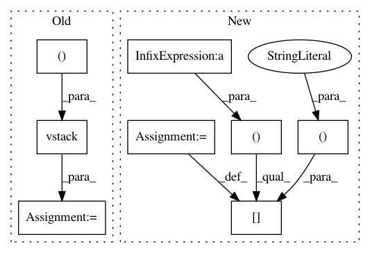

0fba025c0d92308682c4fb2401781ce33e17d5dd,pyemma/coordinates/transform/tica.py,EquilibriumCorrectedTICA,_estimate,#EquilibriumCorrectedTICA#Any#,423
Before Change
self._covar.estimate(iterable, **kwargs)
C0 = self._covar.cov
C_0_eq = np.hstack(( // in modified basis
np.vstack((R.T.dot(C0).dot(R), self._covar.mean.dot(R))),
np.vstack((self._covar.mean.dot(R), 1.0))
))
C_tau_eq = K
// find R_eq s.t. R_eq.T.dot(C_0_eq).dot(R_eq) = np.eye(s)
s, Q = scl.eigh(C_0_eq)
evmin = np.min(s)
After Change
self._covar.estimate(iterable, **kwargs)
C0 = self._covar.cov
C_0_eq = np.zeros(shape=(r+1, r+1)) // in modified basis
C_0_eq[0:r,0:r] = R.T.dot(C0).dot(R)
C_0_eq[0:r, r] = self._covar.mean.dot(R)
C_0_eq[r, 0:r] = self._covar.mean.dot(R)
C_0_eq[r,r] = 1.0
C_tau_eq = K
In pattern: SUPERPATTERN
Frequency: 3
Non-data size: 8
Instances
Project Name: markovmodel/PyEMMA
Commit Name: 0fba025c0d92308682c4fb2401781ce33e17d5dd
Time: 2016-12-13
Author: fabian.paul@mpikg.mpg.de
File Name: pyemma/coordinates/transform/tica.py
Class Name: EquilibriumCorrectedTICA
Method Name: _estimate
Project Name: tyiannak/pyAudioAnalysis
Commit Name: 35a74bcac5b18ed8d0b04cda5d57fcde3659b059
Time: 2020-06-13
Author: tyiannak@gmail.com
File Name: pyAudioAnalysis/ShortTermFeatures.py
Class Name:
Method Name: spectrogram
Project Name: tyiannak/pyAudioAnalysis
Commit Name: 35a74bcac5b18ed8d0b04cda5d57fcde3659b059
Time: 2020-06-13
Author: tyiannak@gmail.com
File Name: pyAudioAnalysis/ShortTermFeatures.py
Class Name:
Method Name: chromagram